RASP （Runtime Application Self-Protection）(运行时应用程序安全保护)
从0开始的Java RASP实现 跟着手动操作一下
https://www.cnblogs.com/bitterz/p/15080403.html
https://www.cnblogs.com/bitterz/p/15152287.html
1 跟着这两篇博客写了点代码实现了一个简单的RASP功能，先看效果,首先是写了一个目标jar，功能是执行命令。
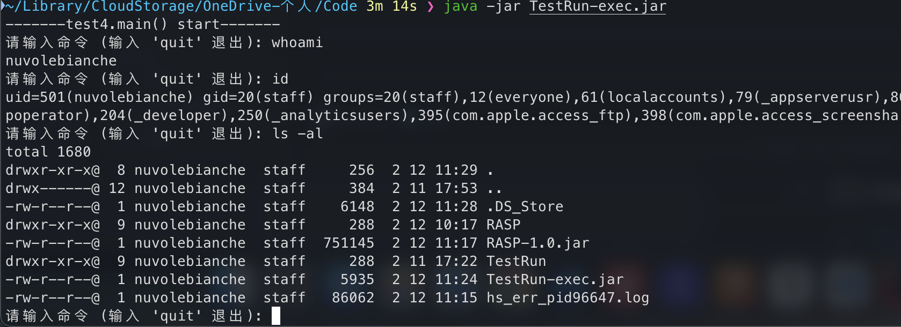
然后是一个agent jar，用于监测执行的命令是否危险，这里我设置的whoami为危险命令，大致效果如下：
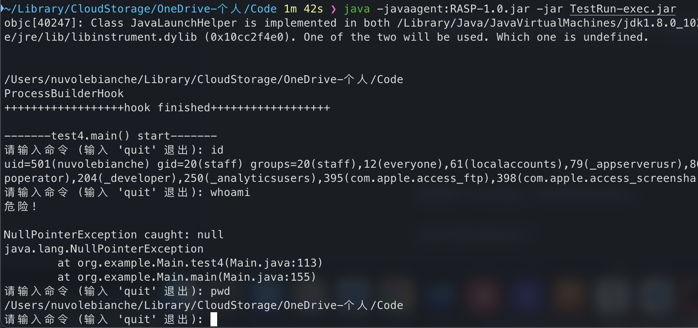
新建两个idea项目，RASP和TestRun，
RASP项目结构如下
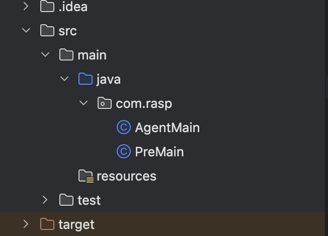
在使用maven打包时，pom文件如下，其中要注意，Agent-Class和Premain-Class，否则可能打包后出现“Failed to find Premain-Class manifest attribute”。
1 2 <Agent-Class>com.rasp.PreMain</Agent-Class> <Premain-Class>com.rasp.PreMain</Premain-Class>
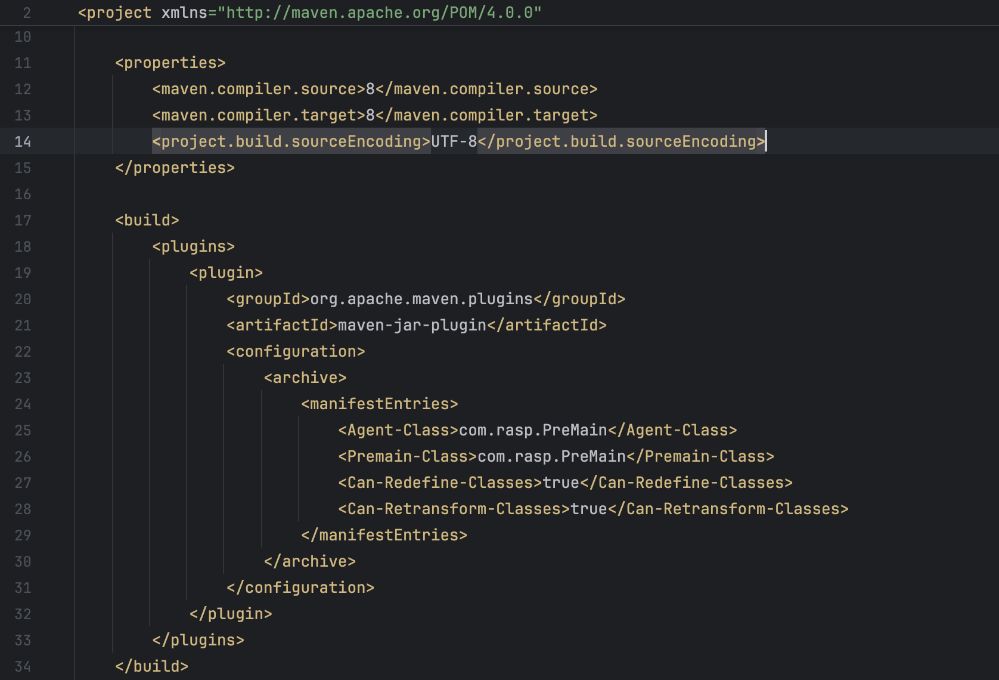
一些危险操作的底层逻辑 java 执行命令 （processBuilder.start()） 先贴代码和环境 Idea: 2024.3.2.2
org/example/Main.java
1 2 3 4 5 6 7 8 9 10 11 12 13 14 15 16 17 18 19 20 21 22 23 24 25 26 27 28 29 30 31 32 33 34 35 36 37 38 39 40 41 42 43 44 45 46 47 48 49 50 public static void test4 () throws InterruptedException System.out.println("-------test4.main() start-------" ); BufferedReader reader = new BufferedReader(new InputStreamReader(System.in)); String input; ProcessBuilder processBuilder = new ProcessBuilder(); try { while (true ) { System.out.print("请输入命令 (输入 'quit' 退出): " ); input = reader.readLine().trim(); if ("quit" .equalsIgnoreCase(input)) { System.out.println("退出程序。" ); break ; } if (!input.isEmpty()) { try { processBuilder.command(input.split(" " )); Process process = processBuilder.start(); InputStream inputStream = process.getInputStream(); BufferedReader bufferedReader = new BufferedReader(new InputStreamReader(inputStream, "utf-8" )); String line; while ((line = bufferedReader.readLine()) != null ) { System.out.println(line); } } catch (NullPointerException e) { System.err.println("NullPointerException caught: " + e.getMessage()); e.printStackTrace(); }catch (IOException e) { System.err.println("执行命令时出错: " + e.getMessage()); } } } } catch (IOException e) { System.err.println("读取输入时出错: " + e.getMessage()); } finally { try { reader.close(); } catch (IOException e) { System.err.println("关闭输入流时出错: " + e.getMessage()); } } }
执行效果如下
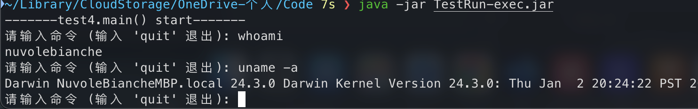
代码 PreMain.java
1 2 3 4 5 6 7 8 9 10 11 12 13 14 15 16 17 18 19 20 21 22 23 24 25 26 27 28 29 30 31 32 33 34 35 36 37 38 39 40 41 42 43 44 45 46 47 48 49 50 51 package com.rasp;import java.lang.instrument.ClassFileTransformer;import java.lang.instrument.IllegalClassFormatException;import java.lang.instrument.Instrumentation;import java.security.ProtectionDomain;import java.io.IOException;import com.rasp.hoook.ProcessBuilderHook;import com.rasp.hoook.MybatisHook;import java.io.BufferedReader;import java.io.IOException;import java.io.InputStreamReader;import java.lang.instrument.Instrumentation;import java.lang.instrument.UnmodifiableClassException;public class PreMain public static void test3 (String agentArgs, Instrumentation inst) throws IOException, UnmodifiableClassException System.out.println("\n" ); ProcessBuilder processBuilder = new ProcessBuilder(); processBuilder.command("pwd" ); Process process = processBuilder.start(); BufferedReader bufferedReader = new BufferedReader(new InputStreamReader(process.getInputStream(), "utf-8" )); System.out.println(bufferedReader.readLine()); ProcessBuilderHook processBuilderHook = new ProcessBuilderHook(inst); inst.addTransformer(processBuilderHook, true ); Class[] allLoadedClasses = inst.getAllLoadedClasses(); for (Class aClass : allLoadedClasses) { if (inst.isModifiableClass(aClass) && !aClass.getName().startsWith("java.lang.invoke.LambdaForm" )){ inst.retransformClasses(new Class[]{aClass}); } } System.out.println("++++++++++++++++++hook finished++++++++++++++++++\n" ); } public static void premain (String agentArgs, Instrumentation inst) throws UnmodifiableClassException, IOException test3(agentArgs, inst); } }
Hook/ProcessBuilderHook
1 2 3 4 5 6 7 8 9 10 11 12 13 14 15 16 17 18 19 20 21 22 23 24 25 26 27 28 29 30 31 32 33 34 35 36 37 38 39 40 41 42 43 44 45 46 47 48 49 50 51 package com.rasp.hoook;import java.io.IOException;import java.lang.instrument.ClassFileTransformer;import java.lang.instrument.Instrumentation;import java.security.ProtectionDomain;import javassist.*;public class ProcessBuilderHook implements ClassFileTransformer private Instrumentation inst; private ClassPool classPool; public ProcessBuilderHook (Instrumentation inst) System.out.println("ProcessBuilderHook" ); this .inst = inst; this .classPool = new ClassPool(true ); } public byte [] transform(ClassLoader loader, String className, Class<?> classBeingRedefined, ProtectionDomain protectionDomain, byte [] classfileBuffer) { if (className.equals("java/lang/ProcessBuilder" )){ CtClass ctClass = null ; try { ctClass = this .classPool.get("java.lang.ProcessBuilder" ); CtMethod[] methods = ctClass.getMethods(); String src = "if ($0.command.get(0).equals(\"whoami\"))" + "{System.out.println(\"可能执行危险命令!\");" ; for (CtMethod method : methods) { if (method.getName().equals("start" )){ method.insertBefore(src); break ; } } classfileBuffer = ctClass.toBytecode(); } catch (NotFoundException | CannotCompileException | IOException e) { e.printStackTrace(); } finally { if (ctClass != null ){ ctClass.detach(); } } } return classfileBuffer; } }
执行效果如下：
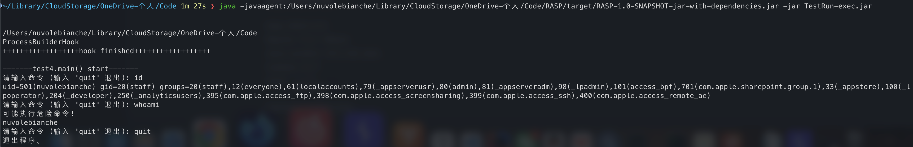
java mysql执行sql （mybatis-select） 先贴代码和环境 Idea: 2024.3.2.2
org/example/Main.java
1 2 3 4 5 6 7 8 9 10 11 12 13 14 15 16 17 18 19 20 21 22 23 24 25 26 27 28 29 30 31 32 33 34 35 36 37 38 39 40 public static void test5 () throws InterruptedException, IOException String resource = "mybatis-config.xml" ; InputStream inputStream = null ; SqlSession sqlSession = null ; BufferedReader reader = new BufferedReader(new InputStreamReader(System.in)); String input,input2; try { inputStream = Resources.getResourceAsStream(resource); SqlSessionFactory sqlSessionFactory = new SqlSessionFactoryBuilder().build(inputStream); sqlSession = sqlSessionFactory.openSession(); SysDictDataMapper mapper = sqlSession.getMapper(SysDictDataMapper.class); while (true ) { System.out.print("请输入dictCode: " ); input = reader.readLine().trim(); System.out.print("请输入dictSort: " ); input2 = reader.readLine().trim(); if ("quit" .equalsIgnoreCase(input)) { System.out.println("退出程序。" ); break ; } if (!input.isEmpty()) { System.out.println(input); System.out.println(input2); List<SysDictData> result = mapper.selectByDictCodeorSort(input,input2); for (SysDictData data : result) { System.out.println(data); System.out.println(data.getCreateBy()); } } } }catch (NullPointerException e) { System.err.println("NullPointerException caught: " + e.getMessage()); } }
org/example/mapper/SysDictDataMapper.java
1 2 3 4 5 6 7 8 9 10 11 12 13 14 package org.example.mapper;import org.example.domain.SysDictData;import java.util.List;public interface SysDictDataMapper List<SysDictData> selectByDictCode (String dictCode) ; }
org/example/domain/SysDictData.java
1 2 3 4 5 6 7 8 9 10 11 12 13 14 15 16 17 18 19 20 21 22 23 24 25 26 27 28 29 30 31 32 33 34 35 36 37 38 39 40 41 42 43 44 45 46 47 48 49 50 51 52 53 54 55 56 57 58 59 60 61 62 63 64 65 66 67 68 69 70 71 72 73 74 75 76 77 78 79 80 81 82 83 84 85 86 87 88 89 90 91 92 93 94 95 96 97 98 99 100 101 102 103 104 105 106 107 108 109 110 111 112 113 114 115 116 117 118 119 120 121 122 123 124 125 126 127 128 129 130 131 132 133 134 135 136 137 138 139 140 141 142 143 144 145 146 147 148 149 150 151 152 153 154 155 156 157 158 159 160 161 162 163 164 165 166 167 168 169 170 171 172 173 174 175 176 177 178 179 180 181 182 183 184 185 186 187 188 189 190 191 192 193 194 195 196 197 198 199 200 201 202 203 204 205 206 207 208 209 210 211 212 213 214 215 216 217 218 219 220 221 222 223 224 225 226 227 228 229 230 231 232 233 234 235 236 237 238 239 240 241 242 243 244 245 246 247 248 249 250 251 252 253 254 255 256 257 258 259 260 261 262 263 264 265 266 267 268 269 270 271 272 273 274 275 276 277 278 279 280 281 282 283 284 285 286 287 288 289 290 291 292 293 294 295 296 297 298 299 300 301 302 303 304 305 306 307 308 309 310 311 312 313 314 315 316 317 318 319 320 321 322 323 324 325 326 327 328 329 330 331 332 333 334 335 336 337 338 339 340 341 342 343 344 345 346 347 348 package org.example.domain;import java.util.Date;public class SysDictData private Long dictCode; private Integer dictSort; private String dictLabel; private String dictValue; private String dictType; private String cssClass; private String listClass; private String isDefault; private String status; private String createBy; private Date createTime; private String updateBy; private Date updateTime; private String remark; public Long getDictCode () return dictCode; } public void setDictCode (Long dictCode) this .dictCode = dictCode; } public Integer getDictSort () return dictSort; } public void setDictSort (Integer dictSort) this .dictSort = dictSort; } public String getDictLabel () return dictLabel; } public void setDictLabel (String dictLabel) this .dictLabel = dictLabel; } public String getDictValue () return dictValue; } public void setDictValue (String dictValue) this .dictValue = dictValue; } public String getDictType () return dictType; } public void setDictType (String dictType) this .dictType = dictType; } public String getCssClass () return cssClass; } public void setCssClass (String cssClass) this .cssClass = cssClass; } public String getListClass () return listClass; } public void setListClass (String listClass) this .listClass = listClass; } public String getIsDefault () return isDefault; } public void setIsDefault (String isDefault) this .isDefault = isDefault; } public String getStatus () return status; } public void setStatus (String status) this .status = status; } public String getCreateBy () return createBy; } public void setCreateBy (String createBy) this .createBy = createBy; } public Date getCreateTime () return createTime; } public void setCreateTime (Date createTime) this .createTime = createTime; } public String getUpdateBy () return updateBy; } public void setUpdateBy (String updateBy) this .updateBy = updateBy; } public Date getUpdateTime () return updateTime; } public void setUpdateTime (Date updateTime) this .updateTime = updateTime; } public String getRemark () return remark; } public void setRemark (String remark) this .remark = remark; } @Override public boolean equals (Object that) if (this == that) { return true ; } if (that == null ) { return false ; } if (getClass() != that.getClass()) { return false ; } SysDictData other = (SysDictData) that; return (this .getDictCode() == null ? other.getDictCode() == null : this .getDictCode().equals(other.getDictCode())) && (this .getDictSort() == null ? other.getDictSort() == null : this .getDictSort().equals(other.getDictSort())) && (this .getDictLabel() == null ? other.getDictLabel() == null : this .getDictLabel().equals(other.getDictLabel())) && (this .getDictValue() == null ? other.getDictValue() == null : this .getDictValue().equals(other.getDictValue())) && (this .getDictType() == null ? other.getDictType() == null : this .getDictType().equals(other.getDictType())) && (this .getCssClass() == null ? other.getCssClass() == null : this .getCssClass().equals(other.getCssClass())) && (this .getListClass() == null ? other.getListClass() == null : this .getListClass().equals(other.getListClass())) && (this .getIsDefault() == null ? other.getIsDefault() == null : this .getIsDefault().equals(other.getIsDefault())) && (this .getStatus() == null ? other.getStatus() == null : this .getStatus().equals(other.getStatus())) && (this .getCreateBy() == null ? other.getCreateBy() == null : this .getCreateBy().equals(other.getCreateBy())) && (this .getCreateTime() == null ? other.getCreateTime() == null : this .getCreateTime().equals(other.getCreateTime())) && (this .getUpdateBy() == null ? other.getUpdateBy() == null : this .getUpdateBy().equals(other.getUpdateBy())) && (this .getUpdateTime() == null ? other.getUpdateTime() == null : this .getUpdateTime().equals(other.getUpdateTime())) && (this .getRemark() == null ? other.getRemark() == null : this .getRemark().equals(other.getRemark())); } @Override public int hashCode () final int prime = 31 ; int result = 1 ; result = prime * result + ((getDictCode() == null ) ? 0 : getDictCode().hashCode()); result = prime * result + ((getDictSort() == null ) ? 0 : getDictSort().hashCode()); result = prime * result + ((getDictLabel() == null ) ? 0 : getDictLabel().hashCode()); result = prime * result + ((getDictValue() == null ) ? 0 : getDictValue().hashCode()); result = prime * result + ((getDictType() == null ) ? 0 : getDictType().hashCode()); result = prime * result + ((getCssClass() == null ) ? 0 : getCssClass().hashCode()); result = prime * result + ((getListClass() == null ) ? 0 : getListClass().hashCode()); result = prime * result + ((getIsDefault() == null ) ? 0 : getIsDefault().hashCode()); result = prime * result + ((getStatus() == null ) ? 0 : getStatus().hashCode()); result = prime * result + ((getCreateBy() == null ) ? 0 : getCreateBy().hashCode()); result = prime * result + ((getCreateTime() == null ) ? 0 : getCreateTime().hashCode()); result = prime * result + ((getUpdateBy() == null ) ? 0 : getUpdateBy().hashCode()); result = prime * result + ((getUpdateTime() == null ) ? 0 : getUpdateTime().hashCode()); result = prime * result + ((getRemark() == null ) ? 0 : getRemark().hashCode()); return result; } @Override public String toString () StringBuilder sb = new StringBuilder(); sb.append(getClass().getSimpleName()); sb.append(" [" ); sb.append("Hash = " ).append(hashCode()); sb.append(", dictCode=" ).append(dictCode); sb.append(", dictSort=" ).append(dictSort); sb.append(", dictLabel=" ).append(dictLabel); sb.append(", dictValue=" ).append(dictValue); sb.append(", dictType=" ).append(dictType); sb.append(", cssClass=" ).append(cssClass); sb.append(", listClass=" ).append(listClass); sb.append(", isDefault=" ).append(isDefault); sb.append(", status=" ).append(status); sb.append(", createBy=" ).append(createBy); sb.append(", createTime=" ).append(createTime); sb.append(", updateBy=" ).append(updateBy); sb.append(", updateTime=" ).append(updateTime); sb.append(", remark=" ).append(remark); sb.append("]" ); return sb.toString(); } }
mybatis-config.xml
1 2 3 4 5 6 7 8 9 10 11 12 13 14 15 16 17 18 19 20 <?xml version="1.0" encoding="UTF-8" ?> <!DOCTYPE configuration PUBLIC "-//mybatis.org//DTD Config 3.0//EN" "http://mybatis.org/dtd/mybatis-3-config.dtd" > <configuration > <environments default ="development" > <environment id ="development" > <transactionManager type ="JDBC" /> <dataSource type ="POOLED" > <property name ="driver" value ="com.mysql.cj.jdbc.Driver" /> <property name ="url" value ="jdbc:mysql://localhost:3306/ry-vue" /> <property name ="username" value ="root" /> <property name ="password" value ="root" /> </dataSource > </environment > </environments > <mappers > <mapper resource ="org/example/mapper/SysDictDataMapper.xml" /> </mappers > </configuration >
org/example/mapper/SysDictDataMapper.xml
1 2 3 4 5 6 7 8 9 10 11 12 13 14 15 16 17 18 19 20 21 22 23 24 25 26 27 28 29 30 31 32 33 34 35 36 <?xml version="1.0" encoding="UTF-8"?> <!DOCTYPE mapper PUBLIC "-//mybatis.org//DTD Mapper 3.0//EN" "http://mybatis.org/dtd/mybatis-3-mapper.dtd" > <mapper namespace ="org.example.mapper.SysDictDataMapper" > <resultMap id ="BaseResultMap" type ="org.example.domain.SysDictData" > <id property ="dictCode" column ="dict_code" /> <result property ="dictSort" column ="dict_sort" /> <result property ="dictLabel" column ="dict_label" /> <result property ="dictValue" column ="dict_value" /> <result property ="dictType" column ="dict_type" /> <result property ="cssClass" column ="css_class" /> <result property ="listClass" column ="list_class" /> <result property ="isDefault" column ="is_default" /> <result property ="status" column ="status" /> <result property ="createBy" column ="create_by" /> <result property ="createTime" column ="create_time" /> <result property ="updateBy" column ="update_by" /> <result property ="updateTime" column ="update_time" /> <result property ="remark" column ="remark" /> </resultMap > <select id ="selectByDictCodeorSort" resultMap ="BaseResultMap" > SELECT * FROM `ry-vue`.`sys_dict_data` WHERE dict_code = "${dictCode}" or dict_sort = #{dictSort} </select > <select id ="selectByDictCode" resultMap ="BaseResultMap" > SELECT * FROM `ry-vue`.`sys_dict_data` WHERE dict_code = "${dictCode}" </select > <select id ="selectByDictSort" resultMap ="BaseResultMap" > SELECT * FROM `ry-vue`.`sys_dict_data` WHERE dict_sort = #{dictSort} </select > </mapper >
项目结构如下，数据库时是拿ruoyi-vue的一个表来测试的
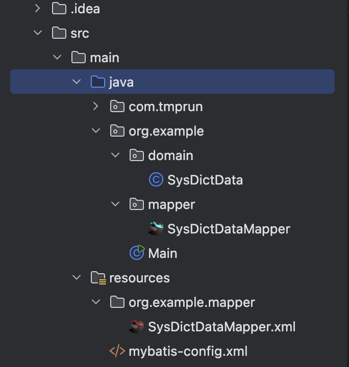
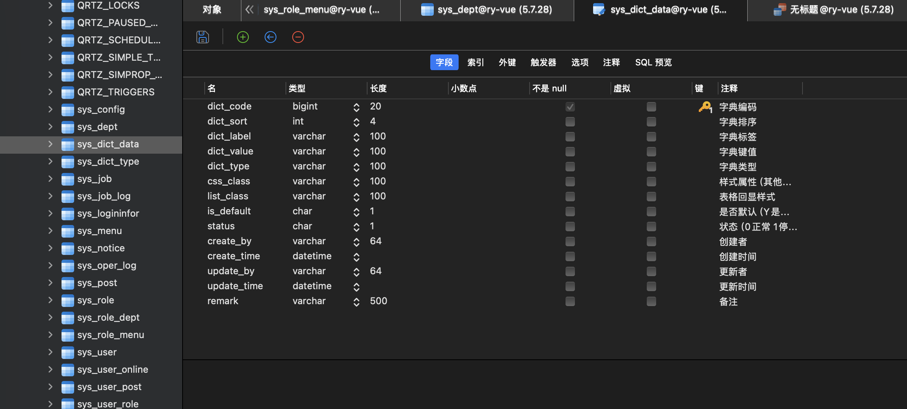
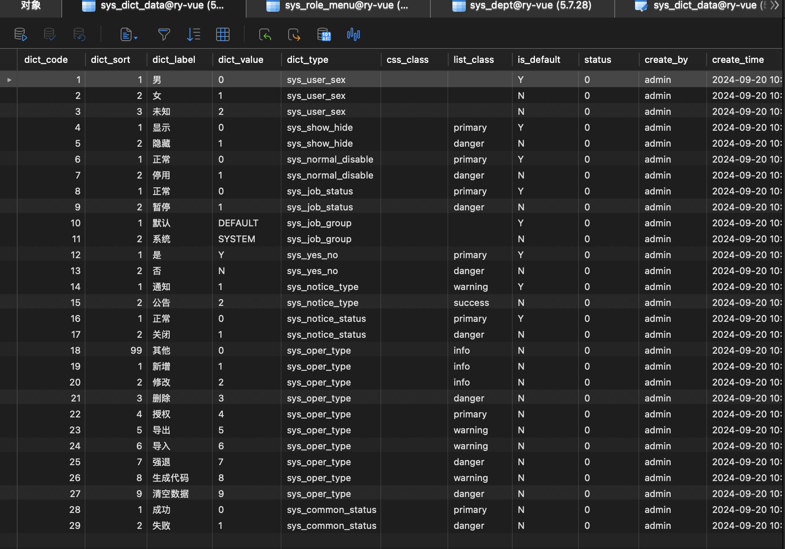
调试 在这一行打上断点，就可以步入mybatis函数内。
1 List<SysDictData> result = mapper.selectByDictCode(input);
对于${}，mybatis是在这一套流程中进行替换的。
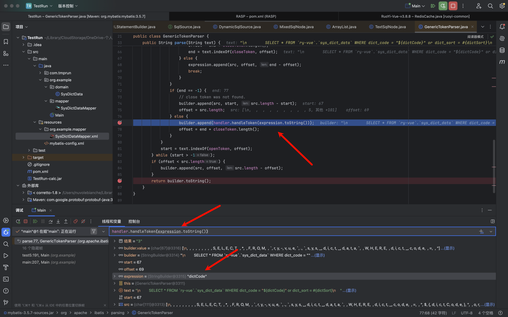
在前面经过一系列处理后，定位到${}以及内部的’expression’,通过handler.handleToken()方法获取到expression对应的参数，比如我这里expression是dictCode，输入的值是3
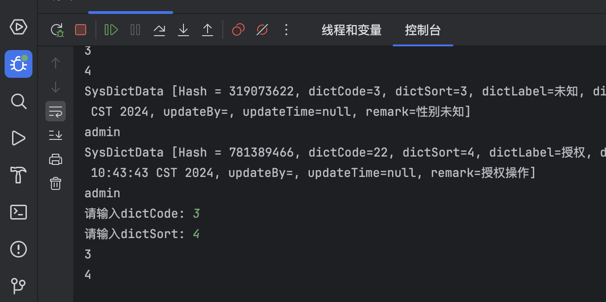
这样这个parse函数最后返回的sql就是长这样
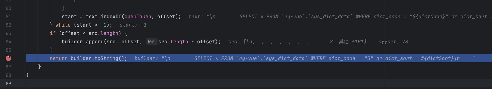
代码 现在我想要把这个sql输出出来，所以我尝试用javaasist写个javaagent试一下
首先确定到该函数位置org.apache.ibatis.parsing.GenericTokenParser#parse
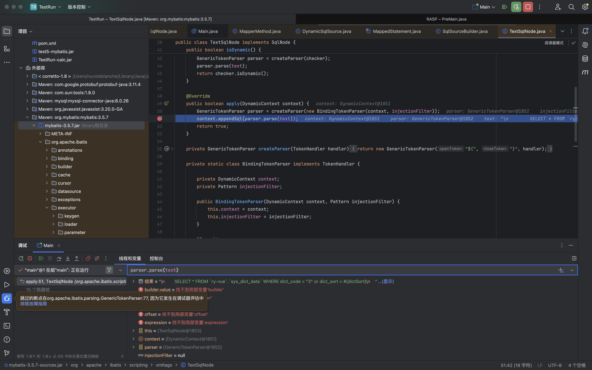
PreMain.java
1 2 3 4 5 6 7 8 9 10 11 12 13 14 15 16 17 18 19 20 21 22 23 24 25 26 27 28 29 30 31 32 33 34 35 36 37 38 39 40 41 42 43 44 45 46 47 48 49 50 51 package com.rasp;import java.lang.instrument.ClassFileTransformer;import java.lang.instrument.IllegalClassFormatException;import java.lang.instrument.Instrumentation;import java.security.ProtectionDomain;import java.io.IOException;import com.rasp.hoook.ProcessBuilderHook;import com.rasp.hoook.MybatisHook;import java.io.BufferedReader;import java.io.IOException;import java.io.InputStreamReader;import java.lang.instrument.Instrumentation;import java.lang.instrument.UnmodifiableClassException;public class PreMain public static void test2 (String agentArgs, Instrumentation inst) throws IOException, UnmodifiableClassException System.out.println("\n" ); ProcessBuilder processBuilder = new ProcessBuilder(); processBuilder.command("pwd" ); Process process = processBuilder.start(); BufferedReader bufferedReader = new BufferedReader(new InputStreamReader(process.getInputStream(), "utf-8" )); System.out.println(bufferedReader.readLine()); MybatisHook MybatisHook = new MybatisHook(inst); inst.addTransformer(MybatisHook, true ); Class[] allLoadedClasses = inst.getAllLoadedClasses(); for (Class aClass : allLoadedClasses) { if (inst.isModifiableClass(aClass) && !aClass.getName().startsWith("java.lang.invoke.LambdaForm" )){ inst.retransformClasses(new Class[]{aClass}); } } System.out.println("++++++++++++++++++hook finished++++++++++++++++++\n" ); } public static void premain (String agentArgs, Instrumentation inst) throws UnmodifiableClassException, IOException test2(agentArgs, inst); } }
Hoook/MybatisHook.java
1 2 3 4 5 6 7 8 9 10 11 12 13 14 15 16 17 18 19 20 21 22 23 24 25 26 27 28 29 30 31 32 33 34 35 36 37 38 39 40 41 42 43 44 45 46 47 48 49 50 51 52 53 package com.rasp.hoook;import javassist.*;import java.io.ByteArrayInputStream;import java.io.IOException;import java.lang.instrument.ClassFileTransformer;import java.lang.instrument.Instrumentation;import java.security.ProtectionDomain;public class MybatisHook implements ClassFileTransformer private Instrumentation inst; private ClassPool classPool; public MybatisHook (Instrumentation inst) System.out.println("MybatisHook" ); this .inst = inst; this .classPool = new ClassPool(true ); } public byte [] transform(ClassLoader loader, String className, Class<?> classBeingRedefined, ProtectionDomain protectionDomain, byte [] classfileBuffer) { if (className.equals("org/apache/ibatis/parsing/GenericTokenParser" )){ CtClass ctClass = null ; try { System.out.println("MybatisHook-transform:" +className); this .classPool.appendClassPath("~/.m2/repository/org/mybatis/mybatis/3.5.7/mybatis-3.5.7.jar" ); ctClass = this .classPool.get("org.apache.ibatis.parsing.GenericTokenParser" ); System.out.println("000000" ); CtMethod[] methods = ctClass.getMethods(); String src = "System.out.println(\"hook= \"+$_);" ; for (CtMethod method : methods) { if (method.getName().equals("parse" )){ method.insertAfter(src); break ; } } classfileBuffer = ctClass.toBytecode(); } catch (NotFoundException | CannotCompileException | IOException e) { e.printStackTrace(); } finally { if (ctClass != null ){ ctClass.detach(); } } } return classfileBuffer; } }
然后把这个打包出jar，运行效果如下，虽然有点丑陋，但是至少能用
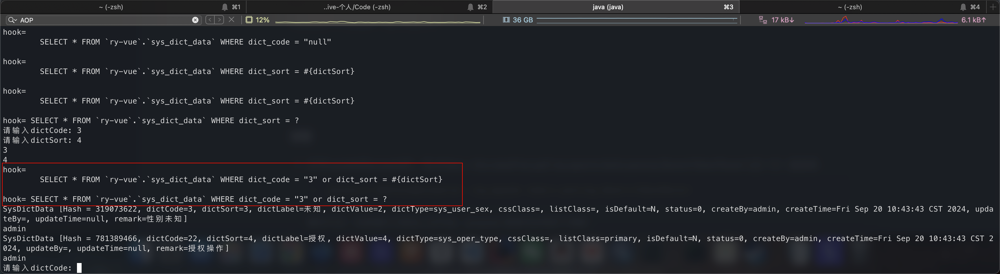
报错
在写mybatis的javaasist时，在ctClass = this.classPool.get(“org.apache.ibatis.parsing.GenericTokenParser”);这一行一直报错
1 javassist.NotFoundException: org.apache.ibatis.parsing.GenericTokenParser
解决方法：在报错行之前加上这句话，javassist 官网对此有如下说明：
1 2 The default ClassPool returned by a static method ClassPool.getDefault() searches the same path that the underlying JVM (Java virtual machine) has. If a program is running on a web application server such as JBoss and Tomcat, the ClassPoolobject may not be able to find user classes since such a web application server uses multiple class loaders as well as the system class loader. In that case, an additional class path must be registered to the ClassPool. 静态方法 ClassPool.getDefault（） 返回的默认 ClassPool 搜索底层 JVM（Java 虚拟机）的相同路径。如果程序在 Web 应用程序服务器（如 JBoss 和 Tomcat）上运行，则 ClassPoolobject 可能无法找到用户类，因为此类 Web 应用程序服务器使用多个类加载器以及系统类加载器。在这种情况下，必须向 ClassPool 注册一个额外的类路径。(机器翻译)
参考https://my.oschina.net/idiotsky/blog/208734
1 this .classPool.appendClassPath("~/.m2/repository/org/mybatis/mybatis/3.5.7/mybatis-3.5.7.jar" );
OPENRASP 在ruoyi-vue 3.8.8 上安装,考虑到手上并没有ruoyi-vue-3.8.8的漏洞，所以需要自己加一个
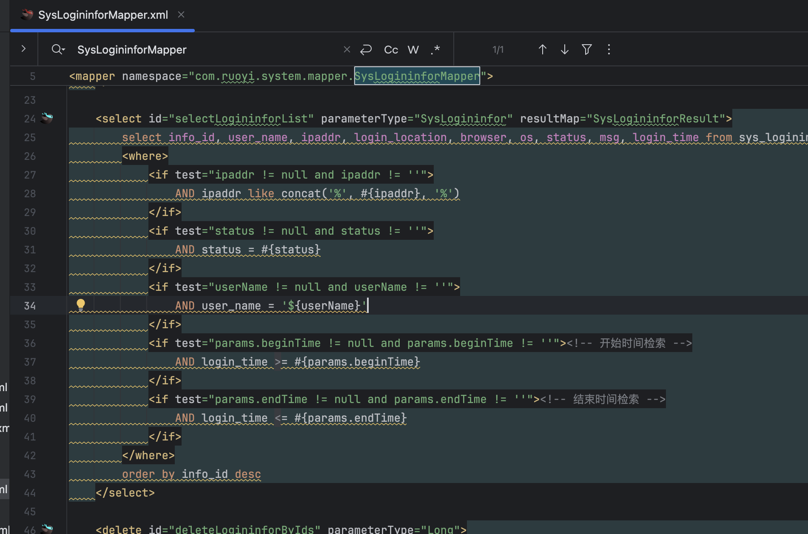
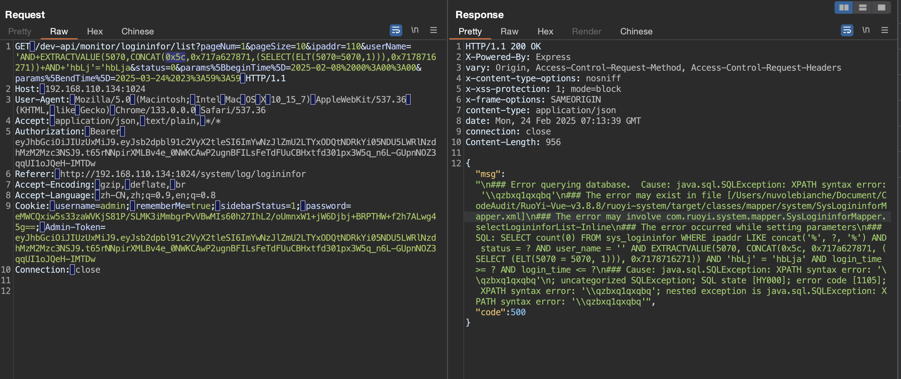
然后打包好项目文件得到ruoyi-admin.jar
带着openrasp的javaagent启动ruoyi-admin.jar
java -javaagent:/Users/nuvolebianche/Library/CloudStorage/OneDrive-个人/Code/rasp-2022-01-28/rasp/rasp.jar -jar target/ruoyi-admin.jar
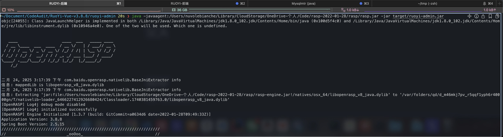
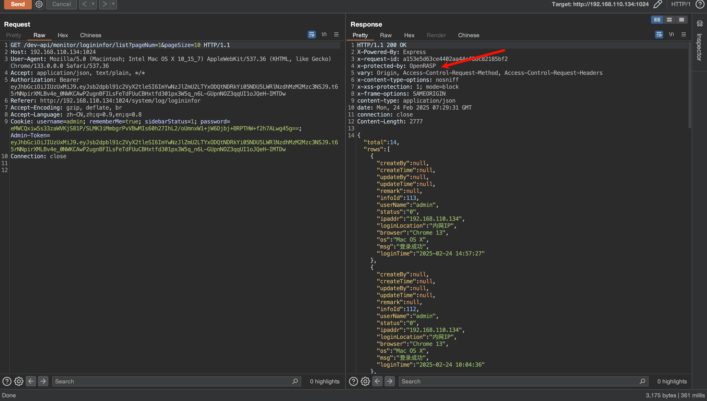
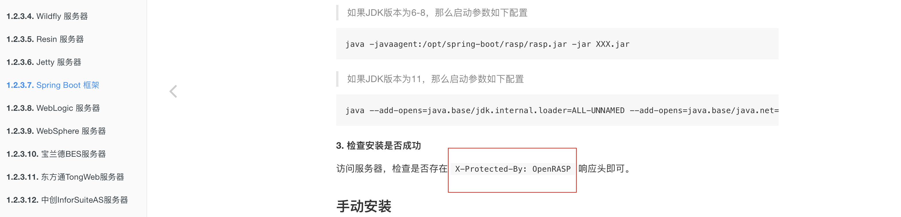
根据https://rasp.baidu.com/doc/install/manual/spring-boot.html，
数据响应包中出现x-protected-by: OpenRASP，安装成功。
结果发现居然连一个报错注入都没拦住。。。
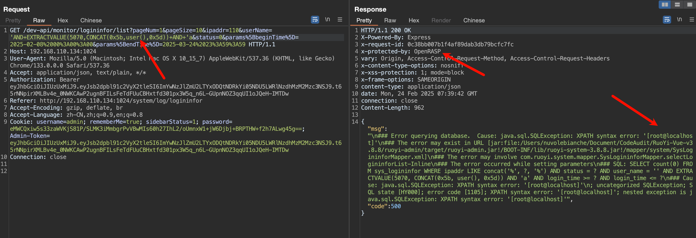
然后发现这个功能得加钱。。
那没办法，只能再加个反序列化漏洞试试看了。
SCA WAF 部署，搭建南墙和雷池，
内存马 一些概念的东西 SAST （Static Application Security Testing）（静态应用安全测试）
SAST 是一种白盒测试方法，它在不运行代码的情况下对源代码或二进制代码进行安全扫描 。SAST 工具通过分析代码结构、逻辑和模式来发现潜在的安全漏洞和不良编码实践。
工作原理：
静态分析：SAST工具在应用代码未运行时，通过分析源代码、字节码或二进制代码，查找潜在的安全漏洞。
代码扫描：利用静态分析技术，扫描代码中的常见漏洞模式，如缓冲区溢出、SQL注入、跨站脚本（XSS）等。
技术细节：
数据流分析：追踪变量和数据在代码中的流动，识别可能导致安全问题的数据流。
控制流分析：分析代码的控制结构，查找可能导致漏洞的执行路径。
语义分析：检查代码的逻辑和语义，识别不安全的编码实践和潜在的逻辑错误。
优点：
可以在开发早期发现和修复安全漏洞，减少修复成本。
能够检测代码中的所有路径和状态，提供全面的漏洞报告。
缺点：
误报率较高：因为仅基于代码分析，可能会有一些误报，需要开发人员进一步确认。
依赖代码质量：代码的复杂性和质量可能影响检测效果，复杂代码可能导致漏报。
无法看到执行流。通常需要定制或调参。
使用场景：
开发阶段：在开发早期和中期，帮助开发人员在编码时发现和修复安全问题。
代码审查：作为代码审查的一部分，确保代码的安全性和质量。
DAST （Dynamic Application Security Testing）（动态应用安全测试）
DAST 是一种黑盒测试技术，通过模拟攻击者的行为来测试正在运行的应用程序，以发现安全漏洞 。它不接触源代码，而是通过发送各种输入并观察应用程序的响应来检测潜在的安全问题
输入模糊测试（Fuzzing）： 向应用发送各种随机或特制的输入数据，观察应用的响应，以发现潜在的漏洞。
爬虫技术： 自动化工具遍历应用的所有页面和功能，确保测试覆盖全面。
工作原理：
DAST工具在应用运行时进行黑盒测试，通过发送各种输入和请求来检测应用的安全漏洞。模拟真实攻击者的行为，尝试通过注入恶意输入、探测开放端口、绕过验证等手段发现漏洞。
DAST的优点是：
自动化程度高：可以自动化运行，定期扫描应用，发现新的安全问题。
缺点：
误报率：由于无法了解应用的内部逻辑，可能会产生误报，需要手动验证。
时间消耗：完整的扫描可能需要较长时间，尤其是大型复杂应用。
覆盖不足：无法检测应用的所有路径和状态变化，可能漏报某些内部逻辑漏洞。
无法理解代码逻辑：DAST 无法深入理解代码逻辑，因此可能漏掉一些编码错误。
使用场景：
生产环境：定期对运行中的应用进行安全检测，确保上线后的安全性。也可以在测试环境下用。
安全评估：作为安全评估的一部分，验证应用的实际防御能力。
IAST （Interactive Application Security Testing）（交互式应用安全测试）
IAST 结合了 SAST 和 DAST 的优点，通过在应用程序内部植入探针，在运行时动态地监测和报告安全漏洞 。比如将IAST代理JAR文件放置在Java应用程序的根目录或者指定目录下，并且在启动应用程序时，通过-javaagent参数指定代理JAR文件的路径。
IAST 可以像 SAST 一样看到源代码，也可以像 DAST 一样看到应用程序运行时的执行流。IAST 工具在应用程序运行时工作，通过代理和传感器收集关于其功能和性能的信息，以实时识别漏洞 。
工作原理：
嵌入式代理：IAST工具通过在应用服务器上部署代理，嵌入到应用的运行环境中。代理可以监控和分析应用的执行流程。
实时分析：在应用运行时，IAST工具会实时监控输入、输出、数据流和控制流，分析这些信息以发现潜在的安全漏洞。
组合检测：IAST结合了SAST和DAST的优点，可以在运行时分析源代码和应用行为，提供更全面的检测。
技术细节：
数据流分析：IAST工具能够追踪用户输入的数据流，识别跨越多个函数和模块的潜在漏洞。
行为监控：实时监控应用的行为，识别异常的操作或不安全的行为，如SQL注入、命令注入等。
优点：
上下文感知：能够了解应用的内部状态和运行环境，因此提供的漏洞信息更准确和详细。
实时反馈：开发人员可以在开发和测试阶段实时获得安全反馈，及时修复漏洞。
低误报率：结合了静态和动态分析的信息，通常比单独使用SAST或DAST的误报率更低。
缺点：
性能开销：嵌入代理可能会增加应用的运行开销，影响性能。
依赖环境：需要在特定的运行环境中才能发挥作用，可能不适用于所有开发流程。
使用场景：
开发和测试阶段：特别适合在CI/CD流水线中集成，进行持续监控和检测。
高敏感度应用：对安全性要求高的应用，如金融、医疗等领域。
参考 浅谈RASP技术攻防之基础篇
从零开始的Java RASP实现(一)
从零开始的Java RASP实现(二)
完全零基础从0到1掌握Java内存马
Java RASP浅析——以百度OpenRASP为例
javaagent使用指南
Java底层防护 - OpenRASP核心源码浅析
JAVA-RASP高效检测SQL注入